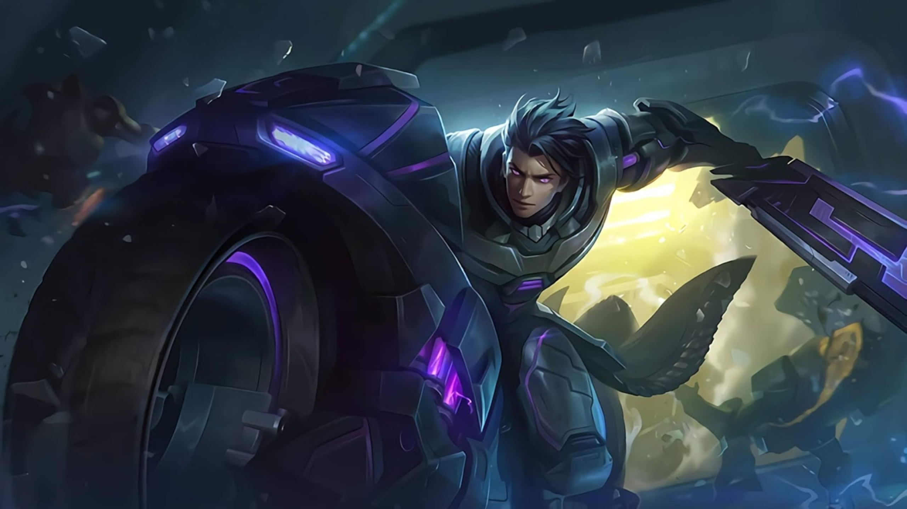
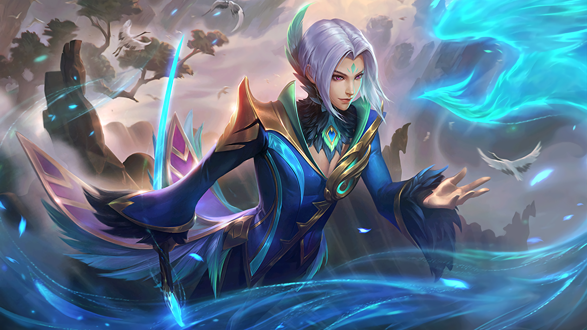
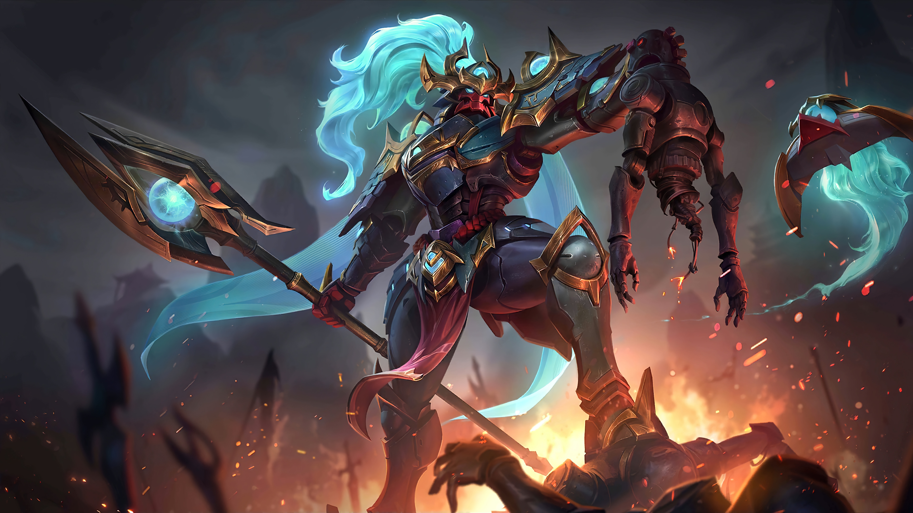

Mobile Legends: Bang Bang adalah permainan video seluler ber-genre multiplayer online battle arena (MOBA) yang dikembangkan dan diterbitkan oleh Moonton, anak perusahaan dari ByteDance.
Dirilis pada tahun 2016, gim ini makin populer di seluruh dunia, terutama di wilayah Asia Tenggara,[4] dan sejak itu telah melampaui 1 miliar kali unduhan, dengan puncak pemain bulanan sebanyak 100 juta.[5][6] Pada tahun 2021, "Mobile Legends: Bang Bang" mencapai pendapatan kotor sepanjang masa sebesar US$1 miliar dengan 44 persen pendapatannya berasal dari luar Asia, menjadikannya gim seluler teratas dari genre-nya dengan daya tarik paling global.
Dari awal perilisannya hingga tahun 2023, Mobile Legends masih menjadi salah satu game kompetitif yang paling populer di Indonesia dan tentunya masih banyak yang memainkannya. Padahal setiap tahun banyak bermunculan game-game MOBA terbaru seperti League of Legends Wild Rift, Auto Chess MOBA, hingga Pokemon Unite.
Walaupun begitu, Mobile Legends masih saja menjadi yang terpopuler di antara mereka, khususnya di Indonesia. Kira-kira apa sih yang membuat game Mobile Legends bisa mempertahankan kepopulerannya di tengah-tengah persaingan game MOBA yang begitu ketat Untuk menjawab pertanyaan tersebut, Eraspace akan merangkum beberapa alasan yang membuat Mobile Legends masih ramai dimainkan. Yuk disimak sampai habis!
Hal pertama yang membuat Mobile Legends dapat mempertahankan kepopulerannya di Indonesia dikarenakan kamu hanya memerlukan hp berspesifikasi rendah untuk memainkannya. Dalam hal ini kamu tidak perlu menggunakan hp dengan spesifikasi tingkat tinggi untuk memainkan Mobile Legends, karena hp spek kentang sekalipun sudah dapat memainkan game ML dengan lancar.
Berbeda dengan game MOBA lainnya seperti League of Legends Wild Rift dan Arena of Valor yang membutuhkan hp berspesifikasi menengah untuk memainkannya, keramahan spesifikasi yang ditawarkan Mobile Legends justru menjadi senjata utama Moontoon untuk memenangkan hati para gamers Indonesia yang cenderung didominasi oleh anak-anak sekolah, yang mana kebanyakan anak sekolah hanya memiliki hp spek kentang.
Jadi, cukup menggunakan hp dengan RAM 2GB, memori internal 16GB, dan jaringan 4G, kamu sudah bisa memainkan Mobile Legends dengan lancar.
Pada dasarnya Mobile Legends merupakan game bergenre MOBA yang menerapkan sistem pertandingan 5 vs 5 dengan beragam pilihan hero yang memiliki rolenya masing-masing, mulai dari marksman, assassins, fighter, mage, tank, hingga support.

Namun sama seperti game MOBA lainnya, Mobile Legends dikemas agar memberikan gameplay yang kompetitif, agar siapapun yang memainkan game ini memiliki kesempatan menang yang sama. Mekanisme kompetitif yang ditawarkan ML sebenarnya terletak pada unsur makro dan unsur mikro in-game-nya.
Unsur makro berkaitan dengan penguasaan terhadap segala hal yang ada di dunia Land of Dawn, nama dari peta Mobile Legends. Mulai dari memahami kapan minion akan respawn, mengetahui setiap berapa menit sekali lord dan turtle muncul, bahkan sekadar tahu kapan kedua monster buff muncul pun perlu kamu ketahui.
Sementara itu unsur mikro sangat berkaitan dengan penguasaan terhadap suatu hero. Jadi kamu harus tau dulu karakteristik dari setiap hero yang kamu gunakan. Contohnya ketahui dulu role dari hero yang kamu gunakan sebelum mengambil posisi yang kamu inginkan, entah itu sebagai midlanner, hyper, gold lanner, ataupun roamer.
Dalam hal ini setiap role hero sebenarnya sudah memiliki posisinya masing-masing, seperti assassins yang lebih cocok dimainkan sebagai hyper, atau role tank dan support yang lebih berguna dimainkan sebagai roamer. Maka dari itu, untuk mendapatkan kemenangan mutlak di Mobile Legends, tim kamu harus memiliki penguasaan terhadap makro dan mikro yang lebih unggul dibandingkan tim lawan.
Sudah bukan rahasia umum Mobile Legends sering mengadakan event-event seru dan beragam. Mulai dari membership Starlight yang tiap bulannya memberikan skin yang berbeda, kemudian ada juga event membagikan skin gratis, hingga event kolaborasi seperti Mobile Legends x Jujutsu Kaisen yang baru-baru ini beredar.

Hadirnya event-event tersebut seringkali menjadi daya tarik tersendiri yang bisa menarik perhatian banyak player Mobile Legends agar terus memainkan game tersebut, walaupun beberapa konten hanya bisa diakses dengan mengeluarkan sejumlah uang.
umum, salah satu keunggulan dari game berbasis multiplayer terletak pada kemampuannya yang memungkinkan kamu dapat mabar bersama teman melalui suatu fitur bernama party. Melalui fitur tersebut, kamu diberikan kesempatan untuk bermain bersama teman di dalam satu pertandingan yang sama, yang tentunya akan menguji solidaritas dan team work antara kamu dengan teman-temanmu.
Selain bisa mabar dengan teman, hal selanjutnya yang membuat game ML masih terus populer di Indonesia dikarenakan komunitasnya hidup dan besar. Besarnya komunitas Mobile Legends di Indonesia tidak perlu diragukan lagi, mengingat dari awal perilisan Mobile Legends hingga sekarang, Indonesia merupakan penyumbang player Mobile Legends terbanyak di seluruh dunia.
Makanya gak heran di setiap acara Mobile Legends yang diadakan Moontoon di Indonesia seperti Mobile Legends Professional League atau MPL akan selalu ramai dikunjungi penonton. Belum lagi Mobile Legends memiliki influencer-influencer yang membantu menghidupkan komunitasnya dan memberikan pengaruh terhadap komunitas tersebut untuk terus memainkan game ini.
Mereka terdiri dari para pro player yang memiliki jumlah followers yang sangat banyak di media sosial, brand ambassador setiap tim eSports, hingga konten kreator yang konsisten membuat konten tentang Mobile Legends.